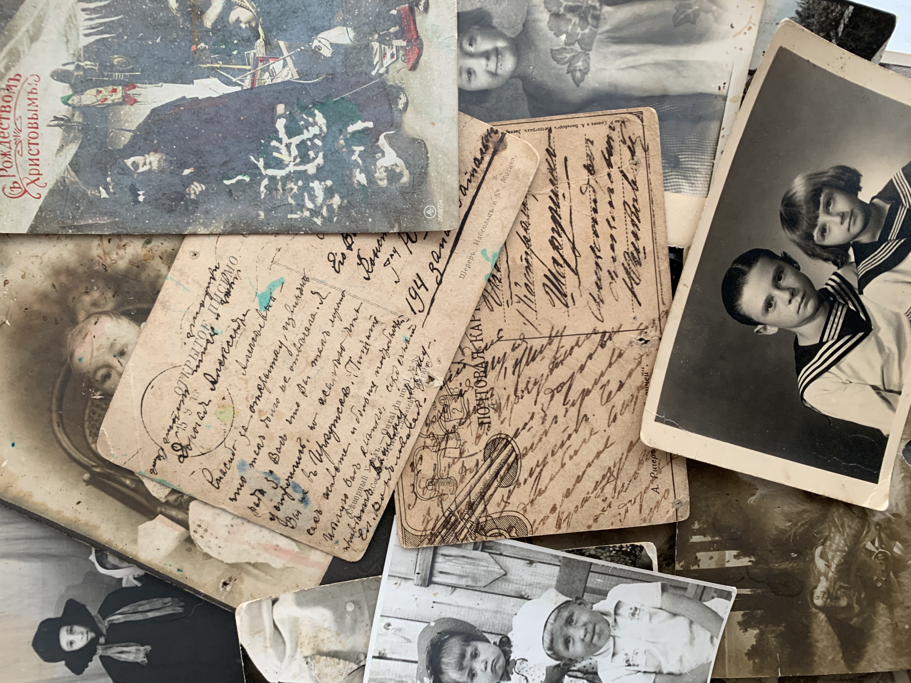

Postcard
 Tutorskaya Irina Alexandrovna, My great-grandma's collection
In the United States John P. Charlton of Philadelphia obtained a copyright for privately printed cards decorated with a border pattern in 1861; the copyright later passed to M.L. Lipman. The U.S. government issued postal cards with imprinted stamps in May 1873. Until 1898 privately printed souvenir cards required a two-cent stamp (double the amount of the government card) if they bore a message.
Germany, Switzerland, and Great Britain followed Austria’s example in supplying postcards through the post offices. The British buff and violet cards, imprinted with the halfpenny stamp, were issued in October 1870 and sold 76 million in the first year. Various claims to the invention of the picture postcard have been made. The best known is perhaps that of Léon Besnardeau of Sillé-le-Guillaume, near Le Mans, France, who devised a card for Breton soldiers during the Franco-German War. These postcards bore an engraving of the battlefield, with stacked arms, around a space for the address.
Postcards bearing small engraved views appeared in the 1870s in Germany and Austria, but in Great Britain their publication was not possible until 1894, when the post office relinquished the right to charge the letter rate on any card other than the official one. Designers were hampered by the rule forbidding correspondence on the side that carried the address. This rule was waived in Britain in 1897, in France in 1903, in Germany in 1905, and in the U.S. in 1907. Artists who designed postcards at the beginning of the 20th century included Alphonse Mucha, Phil May, and Louis Wain. Photomontage (superimposition of photographs) and the combination of drawing and photography were introduced for postcards. At first coloured by hand, colour printing of photographs was adopted by Edwin Bamforth, whose “song and hymn” cards became very popular during World War I.
Collecting picture postcards was an immensely popular hobby in the first decade of the 20th century. Societies and journals dealing with postcards existed in many countries, a trend that continued into the 21st century. The postcard remains an important item of stationery trade.
Original text visit britannica.com!
“Postcard.” Britannica Academic. Accessed April 18, 2021. https://academic-eb-com.ocadu.idm.oclc.org/levels/collegiate/article/postcard/630768. “Postcard.” Wikipedia. Accessed April 18, 2021. https://en.wikipedia.org/wiki/Postcard#/media/File:Scenes_of_Toledo_graphic,_Toledo,_Ohio_-_DPLA_-_0ce167be199e77e548e0c78d05743ed0_(page_2).jpg.